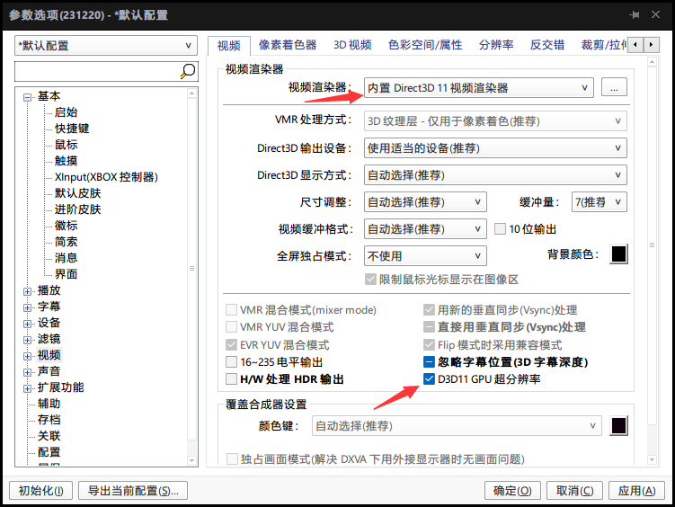
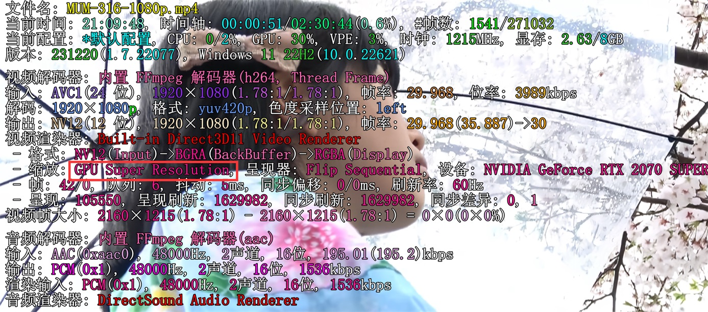

我的显卡是2070s现在也支持了超分辨率,根据网上的教程一通折腾后发现了不少的坑,记一下.希望有缘人可以少走点弯路.
机器配置如下:
1 | [CPU] |
安装
- 先升级显卡驱动到新版本,我这里是546.33 升级后在nv控制面板->调整视频图像设置,里面就有超分辨率选项了,勾上保存,质量不用选很高,我开始选4,在运行成功后,播放一个视频GPU占用会达到70%,功耗过高了,没有必要,后来改为2.
- 网上说要装
mpc-videorenderer-rtx1.1-4e2e160来实现本地资源的超分辨率,实测后发现potPlayer不需要.
配置
浏览器
- chrome最新版直接就可以生效了.
- edge的话需要配置一下才可以生效:
- 在edge的设置中搜索找到
使用硬件加速(如可用)并勾选,重启edge生效. - 在地址栏输入edge://flags/,搜索找到
Microsoft Video Super Resolution,选Enabled,保存重启生效.
- 在edge的设置中搜索找到
本地视频播放器
MPC-BE播放器选择
MPC视频渲染器后就可以开启超分辨率,但是我觉得MPC-BE播放器不好用,而且在我电脑上放着放着会闪退.potPlayer(版本:1.7.22077)经过实测后,发现不用像网上说的装
mpc-videorenderer-rtx1.1-4e2e160,直接选内置D3D11适配渲染器,然后勾选下方的D3D11 GPU超分辨率即可开启.
默认按键下,按TAB键potPlayer可以显示OSD信息:

如果缩放这里显示GPU Super Resolution,那就开启成功了,GPU占用比未开启会有明显的提升,切记测试的时候,选择分辨率低些的视频,播放窗口要拉得超过视频原分辨率才会开启超分辨率
关于本文
本文作者 longforus，采用 CC BY-NC 4.0 许可协议。转载请注明出处。